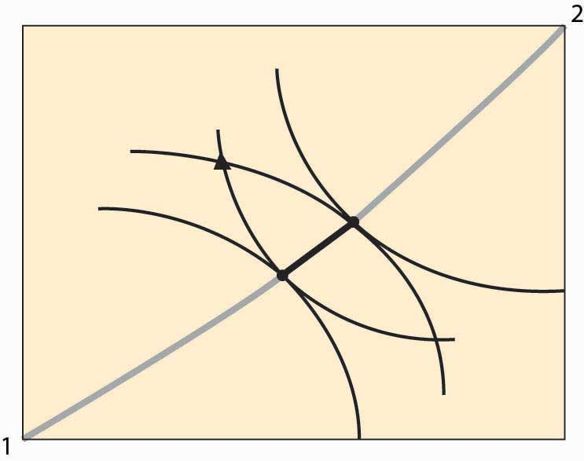
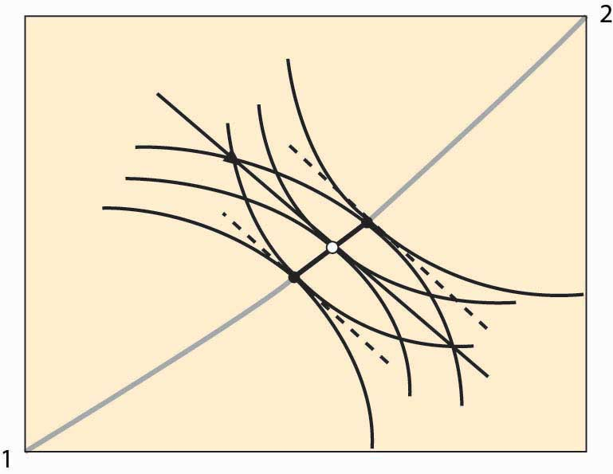
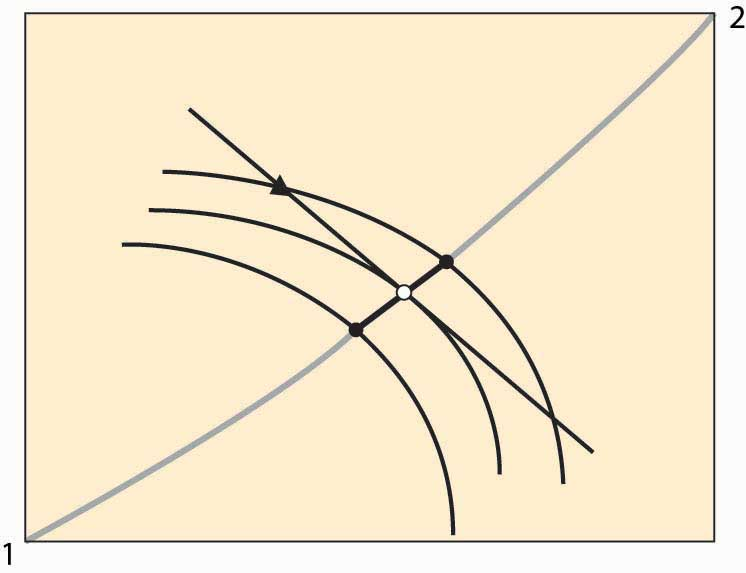

The contract curve provides the set of efficient points. What point will actually be chosen? Let’s start with an endowment of the goods. An endowment is just a point in the Edgeworth box that represents the initial ownership of both goods for both people. The endowment is marked with a triangle in Figure 14.5 "Individually rational efficient points". Note this point indicates the endowment of both Person 1 and Person 2 because it shows the shares of each.
Figure 14.5 Individually rational efficient points
Figure 14.5 "Individually rational efficient points" also shows isoquants for persons 1 and 2 going through the endowment. Note the isoquant for 1 is concave toward the point labeled 1, and the isoquant for 2 is concave toward the point labeled 2. These utility isoquants define a reservation utility level for each person—the utility they could get alone, without exchange. This “no exchange” state is known as autarkyState of no exchange.. There are a variety of efficient points that give these people at least as much as they get under autarky, and those points are along the contract curve but have a darker line.
In Figure 14.5 "Individually rational efficient points", starting at the endowment, the utility of both players is increased by moving in a southeast direction—that is, down and to the right—until the contract curve is reached. This involves Person 1 getting more X (movement to the right) in exchange for giving up some Y (movement down). Thus, we can view the increase in utility as a trade—Person 1 trades some of his Y for some of Person 2’s X.
In principle, any of the darker points on the contract curve, which give both people at least as much as they achieve under autarky, might result from trade. The two people get together and agree on exchange that puts them at any point along this segment of the curve, depending upon the bargaining skills of the players. But there is a particular point, or possibly a set of points, that results from exchange using a price systemSystem that involves a specific price for trading Y for X, and vice versa, that is available to both parties.. A price system involves a specific price for trading Y for X, and vice versa, that is available to both parties. In this figure, prices define a straight line whose slope is the negative of the Y for X price (the X for Y price is the reciprocal).
Figure 14.6 Equilibrium with a price system
Figure 14.6 "Equilibrium with a price system" illustrates trade with a price system. The O in the center is the point on the contract curve connected to the endowment (triangle) by a straight line (the price line) in such a way that the straight line is tangent to both 1 and 2’s isoquants at the contract curve. This construction means that if each person took the price line as a budget constraint, they would maximize their utility function by choosing the point labeled O.
The fact that a price line exists, that (i) goes through the endowment and (ii) goes through the contract curve at a point tangent to both people’s utility, is relatively easy to show. Consider lines that satisfy property (ii), and let’s see if we can find one that goes through the endowment. Start on the contract curve at the point that maximizes 1’s utility given 2’s reservation utility, and you can easily see that the price line through that point passes above and to the right of the endowment. The similar price line maximizing 2’s utility given 1’s reservation utility passes below and to the left of the endowment. These price lines are illustrated with dotted lines. Thus, by continuity, somewhere in between is a price line that passes through the endowment.
The point labeled O represents an equilibrium of the price system, in so far as supply and demand are equated for both goods. Note, given the endowment and the price through the endowment, both parties maximize utility by going to the O. To see this, it may help to consider a version of the figure that only shows Person 2’s isoquants and the price line.
Figure 14.7 Illustration of price system equilibrium
Figure 14.7 "Illustration of price system equilibrium" removes player 1’s isoquants, leaving only player 2’s isoquants and the price line through the endowment. The price line through the endowment is the budget facing each player at that price. Note that, given this budget line, player 2, who gets more as player 1 gets less, maximizes utility at the middle isoquant. That is, taking the price as given, player 2 would choose the O given player 2’s endowment. The logic for player 1 is analogous. This shows that if both players believe that they can buy or sell as much as they like at the trade-off of the price through the O, both will trade to reach the O. This means that if the players accept the price, a balance of supply and demand emerges. In this sense, we have found an equilibrium price.
In the Edgeworth box, we see that, given an endowment, it is possible to reach some Pareto-efficient point using a price system. Moreover, any point on the contract curve arises as an equilibrium of the price system for some endowment. The proof of this proposition is startlingly easy. To show that a particular point on the contract curve is an equilibrium for some endowment, just start with an endowment equal to the point on the contract curve. No trade can occur because the starting point is Pareto efficient—any gain by one party entails a loss by the other.
Furthermore, if a point in the Edgeworth box represents an equilibrium using a price system (that is, if the quantity supplied equals the quantity demanded for both goods), it must be Pareto efficient. At an equilibrium to the price system, each player’s isoquant is tangent to the price line and, hence, tangent to each other. This implies that the equilibrium is Pareto efficient.
Two of the three propositions are known as the first and second welfare theorems of general equilibrium. The first welfare theorem of general equilibriumTheorem that states that any equilibrium of the price system is Pareto efficient. states that any equilibrium of the price system is Pareto efficient. The second welfare theorem of general equilibriumTheorem that states that any Pareto-efficient point is an equilibrium of the price system for some endowment. states that any Pareto-efficient point is an equilibrium of the price system for some endowment. They have been demonstrated by Nobel laureates Kenneth Arrow and Gerard Debreu, for an arbitrary number of people and goods. They also demonstrated the third proposition—that, for any endowment, there exists an equilibrium of the price system with the same high level of generality.